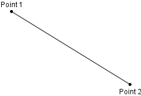

Class Line
java.lang.Object
org.gannacademy.cdf.graphics.Drawable
org.gannacademy.cdf.graphics.geom.Line
- All Implemented Interfaces:
java.lang.AutoCloseable
public class Line extends Drawable
Draw a line

- Author:
- Seth Battis
-
Field Summary
Fields inherited from class org.gannacademy.cdf.graphics.Drawable
NO_STROKE, TRANSPARENT -
Constructor Summary
Constructors Constructor Description Line(double x1, double y1, double x2, double y2, DrawingPanel drawingPanel)Construct a new lineLine(java.awt.geom.Point2D p1, java.awt.geom.Point2D p2, DrawingPanel drawingPanel)Construct a new line -
Method Summary
Modifier and Type Method Description java.awt.geom.Point2DgetP1()Starting pointjava.awt.geom.Point2DgetP2()Ending pointprotected java.awt.geom.Line2DgetShapeAsLine()doublegetX1()X-coordinate of starting pointdoublegetX2()X-coordinate of ending pointdoublegetY1()Y-coordinate of starting pointdoublegetY2()Y-coordinate of ending pointvoidsetHeight(double height)Adjust height of bounding boxvoidsetLine(double x1, double y1, double x2, double y2)Replace the underlying geometryvoidsetLocation(double x, double y)Translate the shape to a locationvoidsetShape(java.awt.Shape shape)Replace the underlyingLine2DgeometryvoidsetWidth(double width)Adjust width of bounding boxvoidtranslate(double dx, double dy)Translate the shape locationMethods inherited from class org.gannacademy.cdf.graphics.Drawable
close, contains, contains, contains, contains, draw, getBounds, getDrawingPanel, getFillColor, getHeight, getLocation, getPathIterator, getShape, getStroke, getStrokeColor, getWidth, getX, getY, intersects, intersects, removeFromDrawingPanel, setDrawingPanel, setFillColor, setStroke, setStrokeColor, setX, setYMethods inherited from class java.lang.Object
clone, equals, finalize, getClass, hashCode, notify, notifyAll, toString, wait, wait, wait
-
Constructor Details
-
Line
Construct a new line
All window coordinates are measured in pixels, with the X-axis increasing from left to right and the Y-axis increasing from top to bottom. All window coordinates exist in the first quadrant.

- Parameters:
x1- coordinate of starting pointy1- coordinate of starting pointx2- coordinate of ending pointy2- coordinate of ending pointdrawingPanel- on which to draw
-
Line
Construct a new line
- Parameters:
p1- Starting pointp2- Ending pointdrawingPanel- on which to draw
-
-
Method Details
-
getShapeAsLine
protected java.awt.geom.Line2D getShapeAsLine()- Returns:
- Underlying
Line2Dgeometry
-
setShape
Replace the underlying
Line2DgeometryChanging the geometry leaves other characteristics (stroke color, style) unchanged.
- Overrides:
setShapein classDrawable- Parameters:
shape- of new geometry (must be and instance ofLine2D)- Throws:
DrawableException- ifshapeis not an instance ofLine2D
-
setWidth
public void setWidth(double width)Description copied from class:DrawableAdjust width of bounding box
-
setHeight
public void setHeight(double height)Description copied from class:DrawableAdjust height of bounding box -
getP1
public java.awt.geom.Point2D getP1()Starting point- Returns:
- Starting point
- See Also:
Line2D.getP1()
-
getP2
public java.awt.geom.Point2D getP2()Ending point- Returns:
- Ending point
- See Also:
Line2D.getP2()
-
setLine
public void setLine(double x1, double y1, double x2, double y2)Replace the underlying geometry- Parameters:
x1- coordinate of the starting pointy1- coordinate of the starting pointx2- coordinate of the ending pointy2- coordinate of the ending point
-
getX1
public double getX1()X-coordinate of starting point- Returns:
- X-coordinate of starting point
- See Also:
Line2D.getX1()
-
getY1
public double getY1()Y-coordinate of starting point- Returns:
- Y-coordinate of starting point
- See Also:
Line2D.getY1()
-
getX2
public double getX2()X-coordinate of ending point- Returns:
- X-coordinate of ending point
- See Also:
Line2D.getX2()
-
getY2
public double getY2()Y-coordinate of ending point- Returns:
- Y-coordinate of ending point
- See Also:
Line2D.getY2()
-
translate
public void translate(double dx, double dy)Description copied from class:DrawableTranslate the shape location
-
setLocation
public void setLocation(double x, double y)Description copied from class:DrawableTranslate the shape to a location
- Specified by:
setLocationin classDrawable- Parameters:
x- coordinate of shape origin at new locationy- coordinate of shape origin at new location
-